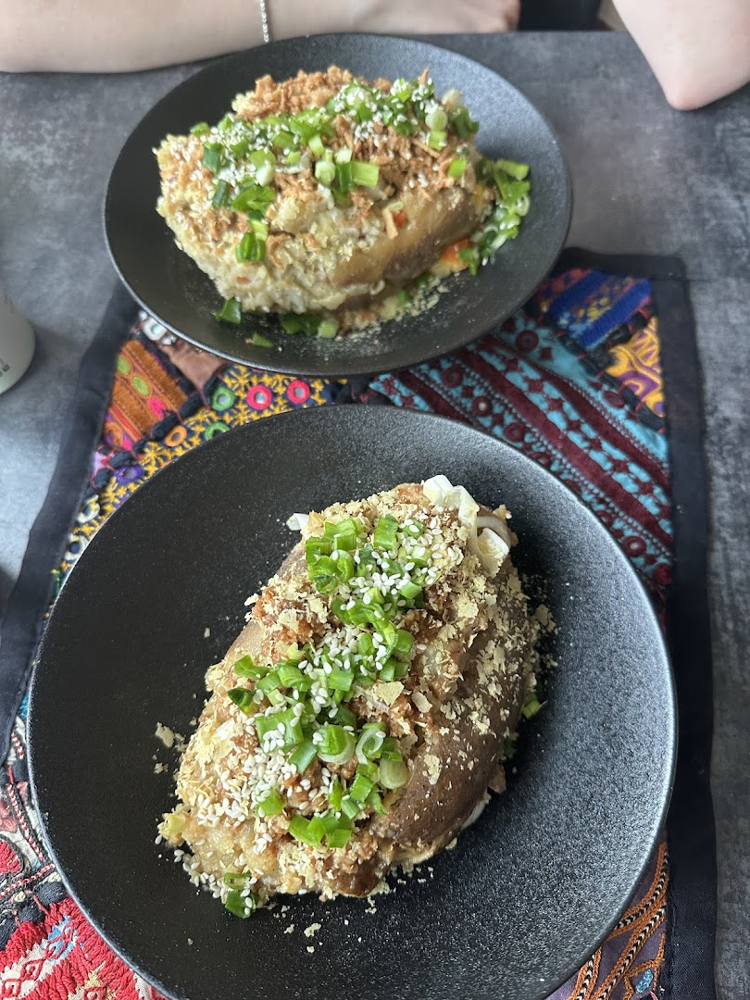
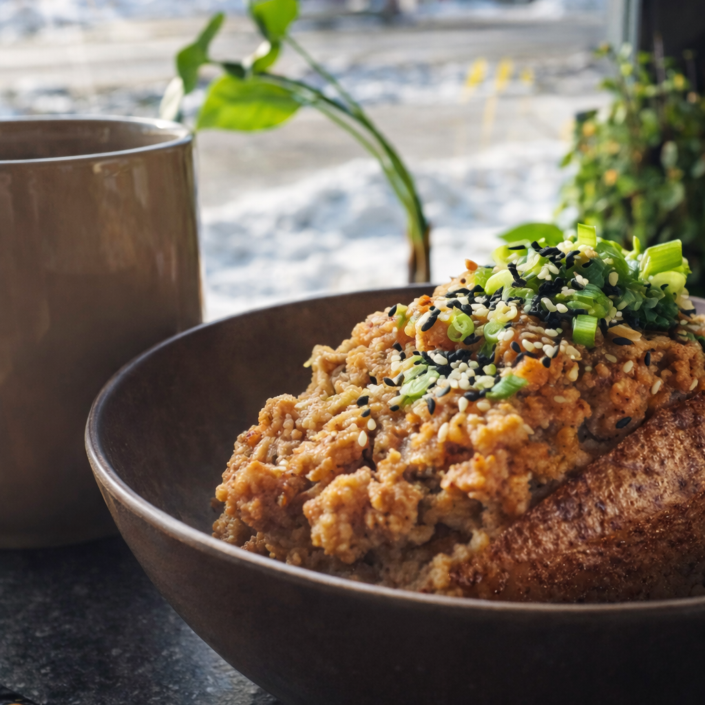
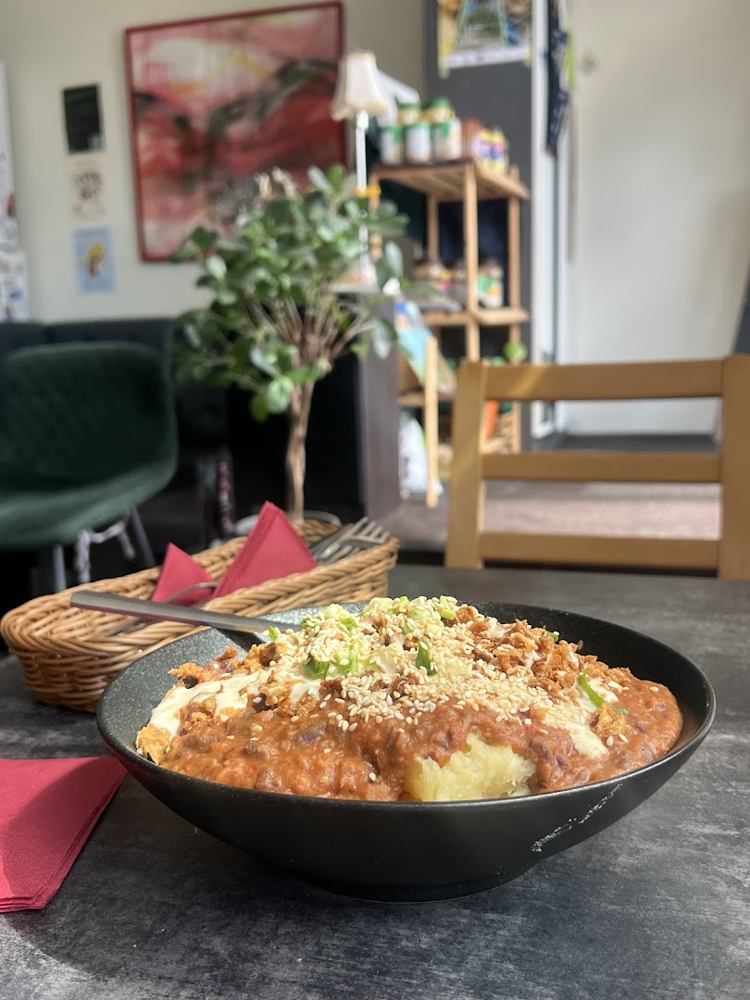

Kopli tn 16 · Põhja-Tallinn · Tallinn
Vegan kartulikohvik Kalamajas kohvi, õlle ja ajakirjariiuliga.
Köök
Kartul on väike vegan kohvik Kalamajas, mis keskendub ühele asjale: täidetud ahjukartulile.
Ahjukartulid tulevad lauale kuhjaga täidisega, alates chimichurri't kuni Lõuna-Aasia vürtside ja hapukas-magusa maitseni. See on taimne mugavustoit, odav ja kõhtutäitev, kõrvale kohv ja õlu.



Üks kartul, mitu moodust seda süüa
Iga kartul küpsetatakse ja täidetakse tellimuse peale, valikus chimichurri, Lõuna-Aasia ja hapukas-magusa stiilis variandid.
| Esmaspäev | Suletud |
|---|---|
| Teisipäev | Suletud |
| Kolmapäev | 12:00 – 20:00 |
| Neljapäev | 12:00 – 20:00 |
| Reede | 12:00 – 23:00 |
| Laupäev | 12:00 – 23:00 |
| Pühapäev | 12:00 – 20:00 |